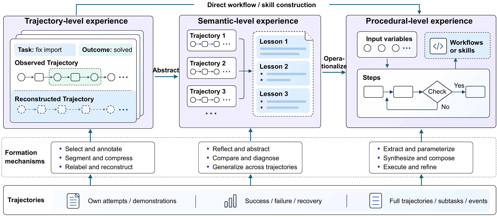

Experience Formation
Browse 43 papers →Formation turns trajectories into candidate experience: a precedent to consult, a lesson to apply, or a procedure to follow. The survey's central argument here: the more a mechanism adds beyond what the trajectories recorded, the more its support must come from outside them — through counterexamples, tests beyond the source tasks, or new execution.

Trajectory-level
- Select and annotate RAP, SEER, TRAD
- Segment and compress Synapse
- Relabel and reconstruct ECHO, BAGEL, BREW
Semantic-level
- Reflective abstraction Reflexion, CLIN, ReasoningBank
- Comparison and diagnosis AutoGuide, ExpeL, TF-GRPO
- Cross-trajectory generalization AutoManual, EMG, EDV
Procedural-level
- Extraction and parameterization AWM, SSO, TraceCompiler
- Synthesis and composition Voyager, SkillWeaver, Metis
- Execution-guided verification ASI, SkillCAT, SkillOpt
Key findings
- Deciding more in advance pays off only while conditions stay stable. A precedent leaves interpretation to the receiving agent, a lesson states a conclusion, and a procedure fixes the steps. In Metis (AppWorld, GPT-4o executor), when each task could use only memory from earlier tasks, text memory reached 73.3% task success against 53.3% for code.
- No form wins on every benchmark. In ExpeL, insights beat retrieved trajectories on HotpotQA (36% vs 31%) while trajectories win on ALFWorld (55% vs 50%); in Memp on ALFWorld with GPT-4o, scripts alone reach 56.4%, trajectories 74.3%, and both 77.9%. Complementary forms help.
- Each formation check supports only what it tests. Source success concerns the recorded behavior, a model's judgment remains an interpretation, a successful rerun shows the candidate works under the tested conditions, and only held-out tasks test transfer.